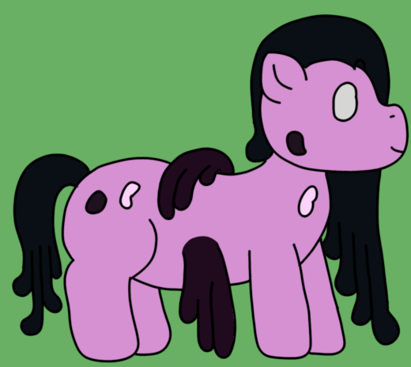

| Commonality | 12.6% (Gangrenous Archons) |
| Durability | 4/10 |
| Strength | Physical: 2/10 Psionic: 1/10 Magical: 1/10 |
| Specials | Repair of damaged puppet mass Contextual assistance for gangrenous puppets |
| Personality | Fervent emergency responders |
Demulcents, being modified Deltas, act as support for gangrenous puppets. They provide as wide variety of potential aide to their fellows, particularly in regards to healing and regenerating lost biomass and aiding with some more complex bodily functions. Like Deltas, a group of Demulcents can be called a gaggle, though it can also be called a cabinet.
Deltas - Demulcents - Laborers
Demulcents are quite a bit larger and bulkier than Deltas, with a typical height of 3' 3" (99cm). Like Macerators, Demulcents show relatively minimal outward gangrenization, represented only in their flippers and some of their blister sacs. Their flippers, of which Demulcents always have three, are an important part of their biology, and are capable of conducting gangrenous energies for the purposes of supporting other puppets. These pulses of energy are quite weak, however, and are incapable of travelling much further than direct contact.
Demulcents are very strange puppets, as many of their abilities are seemingly contextual based on what puppets are around them, and in what state they are in. They mostly stay close to other gangrenous puppets, whom their abilities are most uniquely suited to assisting. A full list of interactions with different gangrenous puppets can be found below.
When they do assist non-gangrenous puppets, Demulcents sport a very strange set of characteristics. They are capable of temporarily weakening psionic bonds, allowing healing that would normally not be possible, for example allowing puppets to quickly regenerate lost limbs without the assistance of greater healing magic. They can also facilitate the passing of subpuppets between Reconcilants.
Given their nature as specialist attendants, a Demulcent's workload during peacetime can vary substantially. Most often, they are seen tending to other puppets, and generally stick to conclaves involving larger gangrenous puppets like Thresholds or Paladins. Like Deltas, Demulcents tend to abhor being alone.
Demulcents sport a very wide range of epigenetic triggers, incorporating Delta (of course), Reconcilant, and even Cambrian triggers on top of the general augmentations from gangrenous infiltration. Given this range of genetic inspiration, it's not known why exactly Demulcents replace Deltas in particular.
Many of Demulcents' strangest and most useful abilities are explicitly tied to assisting other gangrenous puppets. Below is a list of all of their particular interactions:
Following in the Deltas' hoofsteps, the Demulcents are an odd mix of frail and unusual, but most certainly helpful. They're perhaps the gangrenous puppet I can see the most of the original variation in; they love scampering around to help out where they can, particularly in cases where injuries are common. Occasionally, I catch them playing about in the Cambrians' effluvia, making little sculptures that never seem to go anywhere. I have to wonder if they'll ever make something...
Demulcents fulfill the role of gangrenous support, and are perhaps the puppet with the most contextual skills and abilities. They're a bit weird in that regard: I usually strive to make puppet types exist on their own with minimal dependency on others. However, given I've made gangrenous puppets as a batch, it was an opportunity to play with how the puppets link up more; indeed, many gangrenous puppets work together in different "systems" rather than being largely independent or self-reliant. It's a fun creative exercise, and I think it's come to embody what makes gangrenous puppets so special.
